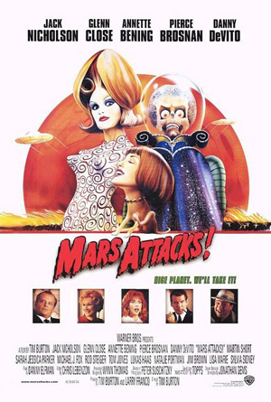

Madman Across the Water (1971)
Goodbye Yellow Brick Road (1973)
A fleet of Martian spacecraft surrounds the world's major cities and all of humanity waits to see if the extraterrestrial visitors have, as they claim, "come in peace." U.S. President James Dale (Jack Nicholson) receives assurance from science professor Donald Kessler (Pierce Brosnan) that the Martians' mission is a friendly one. But when a peaceful exchange ends in the total annihilation of the U.S. Congress, military men call for a full-scale nuclear retaliation.
